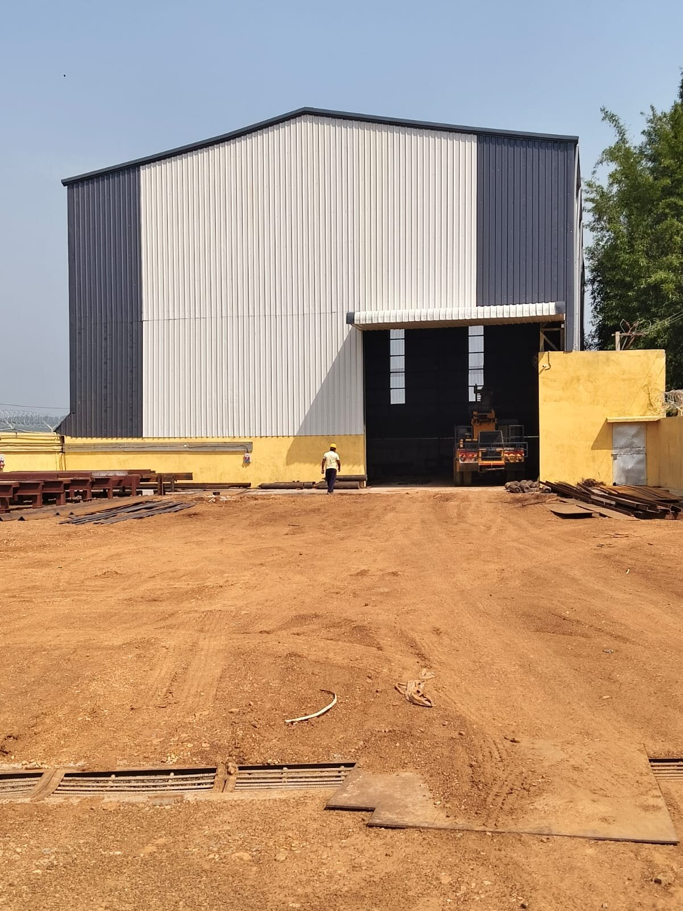

Seventeen years of hydro-mechanical, fabrication & erection and civil contracting work for Government and Non-Government organizations across Eastern India.
Janta Engineering Works was established in 2008 and has since built a reputation in hydro-mechanical works, fabrication & erection, and tankage works. In a short span, JEW has taken on and completed numerous large, technically demanding projects spanning several states in India.
A qualified team of designers and engineers, in-house design facilities and skilled technical manpower — including engineers, draftsmen, fitters and ITI-trained tradesmen — let us concurrently manage assignments across diverse geographies and site conditions.
Quality is treated as a way of life, not just a standard: our commitment runs from procurement through to final commissioning, on every gate, tank and structure we deliver.
The firm is led by proprietor Mantu Prasad, and is registered as a Category 1 contractor with the Jharkhand Water Resources Department.

Drawings and fabrication specs prepared and authenticated by our own engineers and draftsmen before any steel is cut.
Mechanical, structural and civil works handled under one contract — no coordination gaps between trades.
Multi-year O&M contracts, including eight years running at Tenughat Dam, mean our work has to hold up over time, not just at handover.
In-house handling equipment, power backup and skilled manpower deployed directly to site.
Every project begins with a thorough site risk assessment before work starts.
Appropriate personal protective equipment is mandatory on-site at all times.
Hazard recognition and emergency response training for all field personnel.
Clear reporting and prompt investigation of incidents and near-misses.
Janta Engineering Works is a Category 1 registered contractor with the Jharkhand Water Resources Department. Full copies of all certificates above are available on request — contact us for tender documentation.